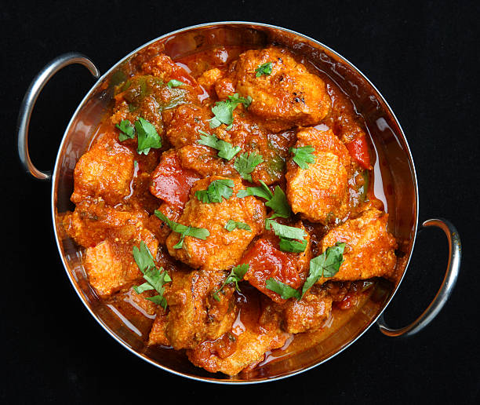

Chicken Butter Masala

Declicious Chicken Butter Masala at your Home
Easy homemade chicken Butter Masala, with a Mouth Watering Gravy
Ingredients
- 2 Tbsp Butter
- 2 cardamoms
- 1 inch Cinnamon
- 2-3 Black Pepper
- 1 Tbsp Ginger Garlic Paste
- 1/2 cup Tomato Puree
- 1/2 tsp Red Chilli Powder
- Salt to taste
- 1 Tbsp sugar
- 1/2 Tbsp Garam Masala Powder
- 1/4 Cup Kasoori Meethi
- 1/2 cup yogurt
- 400gms Chicken Tikka Pieces
Recepie Instructions
- Heat butter in a pan. Add all the whole spices and sauté for few seconds.
- Now ginger garlic paste and sauté till fragrant.
- Add tomato puree and cook till it leaves oil.
- Now add red chili powder, salt, sugar, garam masala powder, kasoori methi and mix well.
- Now add in yogurt, give a nice stir. Add in chicken tikka pieces and cook for more 2-4mins. Turn Off the flame and serve hot.
Return to Recepie's